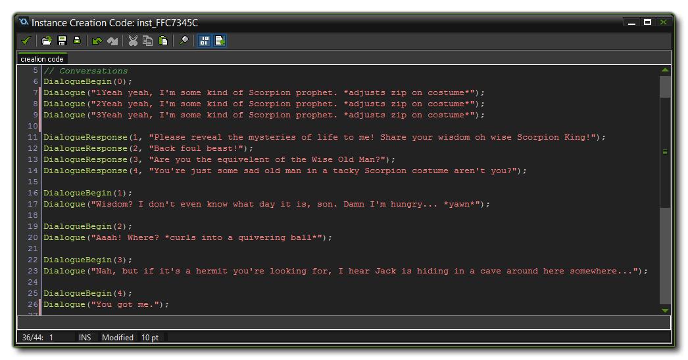

No RPG would be complete without the ability to interact with NPC and Quest characters (or anything else, for that matter). The YoYo Games RPG engine also has an extensive dialogue system, which
is set up and controlled by only a few script calls. Note that you can set this up to work in just about any object in your game, so if you want a talking cactus (for example) you can!
Most of the dialogues in the YoYo Games RPG engine are generated from the Creation Code of an instance after it has been placed within a room. This
permits you to selectively add dialogue wherever you need it in a level as well as use parents to cut down on the number of objects your game requires. Note
that you can create new character objects and define the dialogues in their create event if you wish.
To define a dialogue, you need the DialogueBegin(), Dialogue and the DialogueResponse() scripts. DialogueBegin() takes an index value (which starts from 0, since it is used to define
an array), which will be the index for all text in this dialogue. I single character can have multiple dialogues defined for them, so for example, you can have an NPC ask the player a question (one dialogue),
with two possible replies. Each reply would lead to a different dialogue text (dialogues 2 and 3). So our NPC would have three different dialogue arrays, each with it's own text and responses.
Below is an example of a dialogue from the game engine itself:

Once you have called DialogueBegin(), you can then define the text for the dialogue that you want the character to say. This will be shown on screen using a special object "objDialogueBox", and it will
use the avatar sprite you have set for the instance (see Sprite Sets for more information). To define the text, you call the Dialogue function with the string that you
wish the character to say. Note that the script does not take a dialogue index, and it implicitly adds the string to the last dialogue index that was begun. you can add as many of these as is required to have
your character say multiple lines of text.
You are not limited to having a character simply say some text and then do nothing. You can also have the player respond to their text and so trigger other dialogue trees using the script DialogueResponse.
Calling this script after a Dialogue() call will add in a "response option" string that the player can then click to change the dialogue. The function DialogueResponse takes an array ID as its
first argument, and that is the dialogue array (as defined by DialogueBegin()) that will be used for the "answer" text from the character to the player.
So for example, the following code defines a dialogue with two questions:
DialogueBegin(0);
Dialogue("Would you like to try some haggis?");
DialogueResponse(1, "Yes please, sounds delicious!");
DialogueResponse(2, "Back foul beast!");
DialogueBegin(1);
Dialogue("Another true Scot! Enjoy!");
DialogueBegin(2);
Dialogue("Ah, an Englishman! I have bangers and mash too!");
You can also add an option to end a dialogue at any time using a value of -1 for the array argument. This will show a response with some text if the player clicks it, the dialogue will finish. See the code given
for the shop (below) for an example of use.
The dialogue system is also what will be used for any shops in the games you make using the YoYo Games RPG Engine. Shop dialogues are set up like any other dialogue by calling the DialogueBegin() script, adding any lines you want the character to say and then calling the script DialogueItem(). The script takes the following two arguments:
| argument | Description |
|---|---|
| script_id | The script ID that defines the item for sale |
| num | The number of the items that can be bought (set to negative values if you want to limit the quantity the player can buy) |
So, using this script a number of times in a single dialogue will create a list of items that the player can buy from the shop. There are two important things to note here though:
- The script that defines the items is not run at this point. It simply passed as a reference ID for the engine to use later, therefore you cannot use dynamically created items for this (those created using the script ItemGetDefine() but rather a full item script like ItemGetRubbishSword.
- You can use both positive and negative numbers for the "num" argument. If the number is positive, the item will be shown and the player can buy it as you would expect. If the player already owns the item, then it will be "stacked" in the inventory. However if you use a negative number, you are limiting the total number of that item that the player can carry at any one time. So, if you set an item to have a number of -5, if the player has none, then 5 can be bought but if the player already has a stack of 3, then only 2 can be bought. If the player has the total number of the given item, then it will not be shown as part of the dialogue.
A typical shop dialogue would look like this:
DialogueBegin(0);
Dialogue("Come in and browse my wares!");
DialogueItem(ItemGetScorpionBait, 1);
DialogueItem(ItemGetLifePotion, 1);
DialogueItem(ItemGetBomb, -3);
DialogueResponse(-1, "I've seen enough.");
The above code creates a dialogue, with an introduction text and then three shop items for sale. It also includes a dialogue response to exit the shop which you must remember to add when creating your
own shop dialogues otherwise the player will not be able to exit the conversation!
To see a good example of how all these scripts work together, open the room "rmWeaponShop", then right click on the NPC object behind the counter and select its creation code. There you will see a
varied dialogue and shop that have been set up for the player to use.